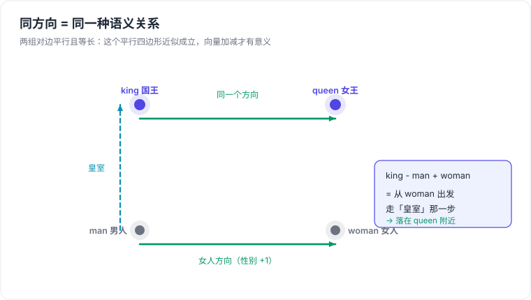
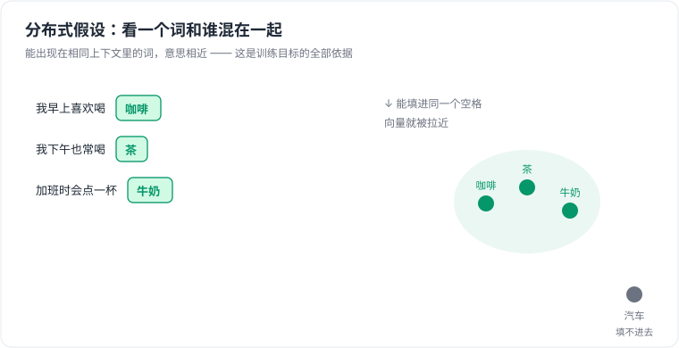
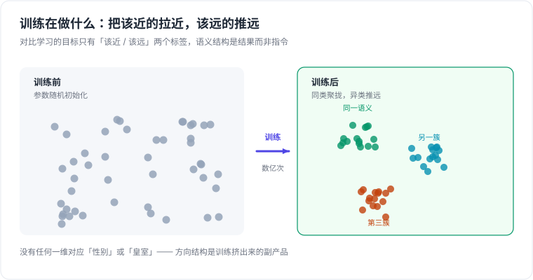

这是「写给工程师的机器学习入门」系列第 2 篇。 上一篇讲清了"语义相似 = 向量方向接近"。这篇回答一个更奇怪的问题： 为什么向量之间可以做加减法，而且结果还有意义？
结论先说
一句话：
向量之所以能做算术，是因为语义关系变成了空间里的「方向」。 从「男」到「女」是一个固定方向，「国王」沿着同一个方向走一步，就落到「女王」附近。
这听起来像魔法，但它只是训练出来的结果：模型见了足够多的文本，把"经常出现在相似上下文里的词"放到相近位置。这个过程没有任何人教它"性别是个维度"。
一、那个著名的等式
2013 年 word2vec 论文里有一个让所有人震惊的演示：
king - man + woman ≈ queen用中文说：
国王 - 男人 + 女人 ≈ 女王这个式子的意思是：把"国王"的向量，减掉"男人"的向量，加上"女人"的向量，得到的向量最接近"女王"。
而且不止这一组。同一批论文里还有：
paris - france + italy ≈ rome 巴黎 - 法国 + 意大利 ≈ 罗马
walking - walk + swim ≈ swimming 走 - 走(原形) + 游泳 ≈ 游泳(进行时)
bigger - big + small ≈ smaller 更大 - 大 + 小 ≈ 更小三组例子分别对应三种关系：性别、首都、时态。
这意味着什么？意味着"性别"这个概念，在这个向量空间里是一个可以平移的方向——不管你是国王还是演员还是教师，加上"女性方向"就变成对应的女性版本。
二、为什么减法能表达"关系"？
先从简单的二维情形理解。
假设我们用一个二维坐标描述人：第一个维度是"皇室程度"，第二个是"性别"（0 = 男，1 = 女）。
男人 man = [0.0, 0.0]
女人 woman = [0.0, 1.0]
国王 king = [1.0, 0.0]
女王 queen = [1.0, 1.0]现在做那个减法：
king - man + woman
= [1.0, 0.0] - [0.0, 0.0] + [0.0, 1.0]
= [1.0, 1.0]
= queen ✓结果精确等于女王。
为什么？因为这个减法在做两件事：
king - man：两个向量的差 = 从"男人"到"国王"要走的那一步（皇室 +1，性别不变）+ woman：从"女人"出发，走同样那一步 → 落到"女王"

*图 1：king→queen 与 man→woman 是同一个方向。这就是"性别"在向量空间里的表示。*
在几何上，这四个点构成一个平行四边形——两组对边平行且等长。所以严格说，这不叫"减法有意义"，而叫这个平行四边形近似成立。
而它之所以近似成立，是因为模型在训练中把"性别差异"编码成了所有相关词共享的一个方向。
三、真实的 300 维空间里没有"性别维度"
上面那个二维例子是我为了讲解编的。真实的 embedding 是 300 维、768 维、1536 维，没有任何一维对应"性别"。
真实情况是：
- "性别"这个语义差异，分散在几百个维度的组合里
- 没有任何单一一维可以命名
- 人类无法解释第 47 维代表什么
所以那个等式在真实模型里是近似的，不是精确相等：
cos(king - man + woman, queen) ≈ 0.71 ← 相似但不等于 1它只是排在最相似的位置上。而且这个性质并不稳定：
| 情况 | 类比效果 |
|---|---|
| word2vec 学词向量 | 显著（这是它的著名特性） |
| 现代句子级 embedding | 弱化甚至消失 |
| 中文模型 | 与英文表现不同，取决于训练语料 |
这一点必须说清楚，否则容易变成"AI 神话"。
四、这些方向是怎么学出来的？
关键在训练目标。这里讲两种思路，理解了它们就理解了 embedding 的本质。
思路一：分布式假设
语言学家 Firth 在 1957 年说过一句话：
You shall know a word by the company it keeps. （看一个词和谁混在一起，就知道它是什么词。）
意思是：一个词的意思，由它经常出现的上下文决定。
比如：
我早上喜欢喝 ___ 。
我下午也常喝 ___ 。空格里能填"咖啡"、"茶"、"牛奶"。这三个词出现在相似的上下文里，所以它们的意思相近——在向量空间里应该挨着。
而"汽车"不会出现在这个位置（"我早上喜欢喝汽车"不通），所以它离得远。

*图 2：能填进同一个空格的词，向量会被拉近。语义就是这么"算"出来的。*
思路二：对比学习
现代 embedding 模型（包括你在用的 text-embedding-3-small）大多用对比学习：
for (句子A, 它的改写版) in 训练数据:
v1 = model(句子A)
v2 = model(改写版)
拉近(v1, v2) # 正样本：意思一样，向量靠近
for (句子A, 无关的句子) in 训练数据:
推远(vA, v_无关) # 负样本：意思无关，向量远离反复做这两件事几亿次，模型就学会了"什么样的句子该放在一起"。
关键点：训练目标里没有"语义"这个词，只有"该近"和"该远"的标签。语义结构是这个过程的副产品。

*图 3：训练前向量随机散布；训练后同类聚集、异类推远。方向结构是训练"挤"出来的。*
五、三个常见误解
误解 1：「模型理解了性别是什么意思」
没有。它只是发现"男/女"这组词在大量文本里呈现出一致的差异模式，于是把这个模式压缩成一个方向。它不知道性别是什么，只知道这组词的关系是稳定的。
误解 2：「所有 embedding 都能做类比」
不能。类比能力是 word2vec 那一代词级模型的特征。现代句子级模型（你调 API 拿到的那个）优化的是"整句语义相似"，不是"单个词的线性关系"。
拿 text-embedding-3-small 去做 国王 - 男人 + 女人，结果大概率不理想。不是模型差，是它的训练目标不同。
误解 3：「维度越高类比越准」
无关。维度影响的是表达能力和存储成本，类比能力取决于训练目标与数据。用 300 维的 word2vec 做类比，可能比用 1536 维的通用句向量更准。
六、知道了这个，工程上能干什么？
三个直接可用的判断：
1. 为什么语义搜索能匹配"没出现过的词"
用户搜"笔记本续航"，文档里写的是"电池使用时间"。字面零重叠，但向量接近，所以能召回。这就是 RAG 能work 的根本原因——不是关键词匹配，是方向匹配。
2. 为什么"领域模型"常常比"更大模型"更好
通用模型在通用语料上训练，医学词、法律词的"方向结构"可能没学好。用领域语料训练的模型，在这个领域里的相对位置更准。
这也解释了为什么很多团队发现：换一个 1024 维的中文领域模型，检索效果比 1536 维的通用模型好。
3. 为什么不能混用不同模型的向量
不同模型的坐标系完全不同——"性别方向"在 A 模型里可能是第 3 和第 7 维的组合，在 B 模型里可能是另外几十维。两套向量放在一起算距离没有意义。
这就是上一篇提到的"换 embedding 模型必须重建知识库"的深层原因：不只是维度不同，是整个坐标系都换了。
本篇小结
三句话：
- 语义关系 = 空间中的方向，所以向量能做算术
- 方向是训练出来的，靠"相似上下文放在一起"这个目标
- 坐标系统一才能比较，换模型等于换地图
下一篇预告
《你说的"相似"到底是什么相似？——余弦、点积与归一化》
下一篇讲三个容易混淆的相似度度量，以及为什么很多 API 默认返回的分数不能直接当"相关度百分比"用。
---
关于作者
本文是「写给工程师的机器学习入门」系列第 2 篇。作者 PHclaw 在做 AgentFlow——一个自托管 AI Agent 平台，知识库检索、embedding 端点配置、多模型热切换都在真实代码里。
- 源码：https://github.com/PHclaw/agentflow
- 在线演示：http://159.75.21.251:3000
- 文档：https://phclaw.github.io/agentflow/
- 全部文章：https://phclaw.github.io/blog/
对向量空间有疑问，欢迎在 Discussions 里讨论。